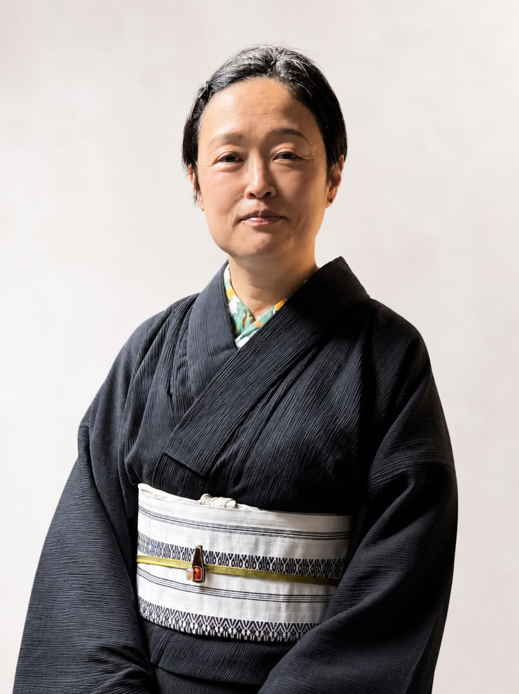

開催概要
| 日時 |
2026年11月4日（水） ※時間詳細は下記タイムスケジュールをご確認ください |
|---|---|
| セミナー会場 |
オフライン現地開催（セミナー会場） ※会場詳細は、お申し込み完了後に案内メールにてお知らせいたします。 |
| 懇親会会場 |
別会場（会場近隣店舗） ※セミナー終了後、徒歩圏内の別会場へ移動して開催いたします。 |
| 形式 | 第1部：セミナー（講演） ／ 第2部：懇親会・情報交換会（別会場） |
| 対象者 | 士業・専門家、その他相続実務や遺言に関心のある皆様 |
| 主催 | 士縁会 |
タイムスケジュール
第1部：講演セミナー（セミナー会場）
「遺言の重要性と民法改正後の最新事情」
遺言の基本・実務上のメリットから、デジタル公正証書や民法改正による最新の法改正トレンドまで解説いたします。
第2部：懇親会・交流会（別会場へ移動）
講師・参加者同士の懇親交流会
近隣の別会場（飲食店舗）へ移動して懇親会を行います。講師への質疑応答や会員・参加者同士のネットワーク作りにご活用ください。
講師紹介

山本 百合香（やまもと ゆりか）氏
ななくり行政書士事務所 代表行政書士 / 上級相続診断士
【主な業務分野・実績】
- 公正証書作成支援（遺言・任意後見・死後事務委任）
- 自筆証書遺言作成サポートおよび遺産整理業務
- 各種許認可業務（建設業・宅建業・医療法人）
講演プログラム
1自己紹介・オープニング
- 講師プロフィールと日々の実務紹介
2遺言とは（遺言の必要性と実務）
- 「遺言」と「遺書」の違い、法的効力について
- 遺言がない場合のリスク（遺産分割協議の難しさとトラブル例）
- 作成状況データと「作らない理由」の勘違い（財産規模と争いの関係）
- 遺言を準備しておくべきケース（制限行為能力者、お一人様、子供のいない夫婦、離婚歴など）
- 遺言の種類（自筆証書・公正証書・秘密証書）の特徴と比較
3デジタル公正証書の概要
- 制度改正の背景と目的（対面・紙からデジタル手続きへ）
- Web会議やマイナンバーカード電子署名によるリモート確認の流れ
- デジタル化がもたらす3つの価値（利便性・迅速化・強固な安全性）
4民法（遺言関係）改正案要綱の概要
- 民法改正のスケジュールと3つの柱（デジタル化・押印廃止・非対面）
- 新設される「保管証書遺言」（電磁的記録での作成・法務局保管）
- 自筆証書遺言・秘密証書遺言における押印要件の廃止と方式緩和
- Web会議や録音録画を活用した危急時遺言・相続手続きの効率化
懇親会のご案内（別会場）
🍶 セミナー終了後、別会場にて懇親会を開催します
講演終了後、セミナー会場近くの別会場（飲食店舗）へ移動し、講師の山本先生を交えた懇親会を開催いたします。セミナー内容に関する深い質疑応答や、参加者同士の情報交換・ネットワーク作りの場としてぜひご参加ください。（※お申し込みフォームより懇親会への参加可否をご選択いただけます）